Adizero Adios Pro 3
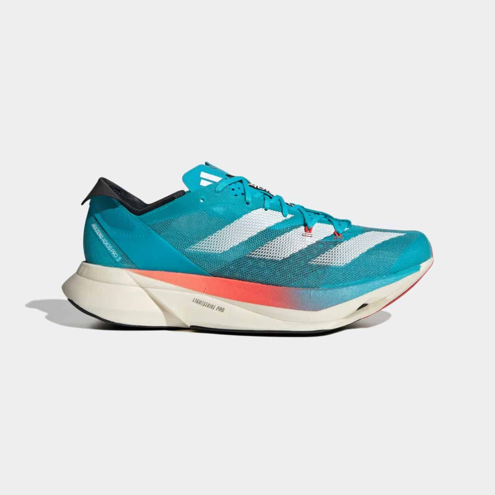
| Rekomendasi sepatu running Adidas yang pertama adalah seri Adizero Adios Pro 3.
Sepatu ini menawarkan fitur-fitur unggulan yang membuat lari jadi lebih cepat.ADVERTISEMENT
Alih-alih menggunakan carbon plate seperti super shoe pada umumnya, teknologi yang digunakan pada sepatu ini adalah five energy rods yang dibuat menyerupai tulang metatarsal kaki.
Fitur ini membuatnya jadi lebih ringan dan tidak licin, serta menawarkan tingkat stabilitas yang baik.
Adidas Adizero Adios Pro direkomendasikan untuk kamu yang punya hobi lari serius, apalagi sering mengikuti race day.
Kisaran harga: Rp4.000.000 |
- Kelebihan
- Lebih ringan dan tidak terlalu licin seperti model sebelumnya
- Pengembalian energi yang fantastis
- Keras dan responsif
- Kekurangan
- Ketika ditali dengan kuat bisa menimbulkan rasa tidak nyaman pada bagian atas kaki
- Tidak untuk yang suka sepatu dengan sol yang empuk
Ultraboost Light
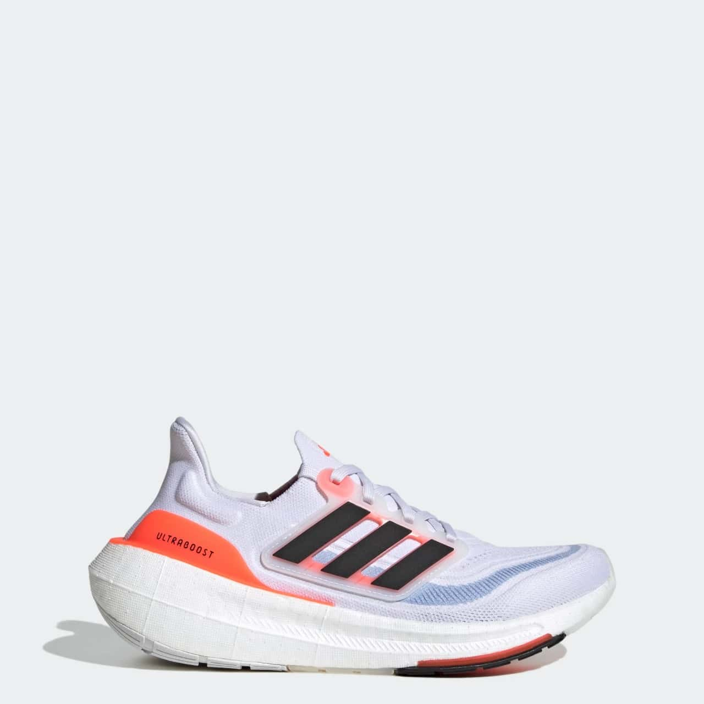
| Ultraboost Light adalah salah satu seri andalan dari jajaran sepatu running Adidas.
Sepatu ini sangat serbaguna karena cocok untuk siapa saja yang mencari sepatu untuk digunakan dalam berbagai ajang lari.
Sesuai dengan namanya yang mengusung kata “Light”, seri Ultraboost ini lebih ringan dari seri-seri sebelumnya.
Meski demikian, sepatu ini seharusnya bisa lebih ringan karena beratnya sendiri masih 262 g.
Adidas Ultraboost Light direkomendasikan untuk kamu penggiat lari jarak jauh karena sepatu ini dilengkapi dengan bantalan yang super nyaman.
Kisaran harga: Rp3.300.000 |
- Kelebihan
- sangat nyaman
- pas dikaki
- serba guna
- Kekurangan
- Ringan, tetapi harusnya bisa lebih ringan
Adizero Takumi Sen 9
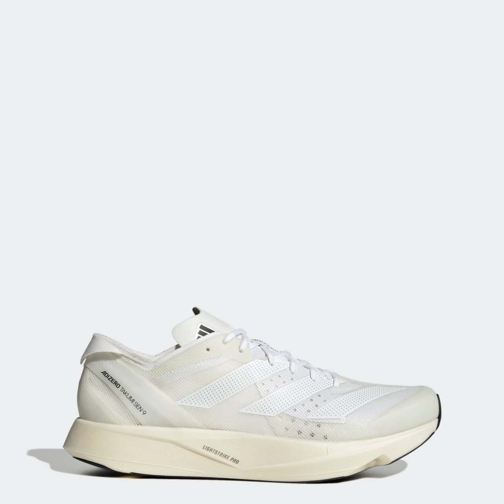
| Adizero Takumi Sen 9 adalah seri sepatu lari Adidas yang dirancang untuk memberikan performa lari yang cepat, khususnya dengan jarak lari 5k hingga half marathon.
Sepatu ini sebenarnya juga nyaman untuk lari maraton jika kamu lebih suka dengan sepatu yang lebih rata.
Teknologi yang digunakan pada sepatu ini adalah foam Lightning Strike yang disandingkan dengan energy rods dan ditambah dengan upper yang ringan.
Adizero Takumi Sen 9 direkomendasikan untuk kamu yang sedang mencari sepatu half marathon terbaik.
Kisaran harga: Rp3.200.000 |
- Kelebihan
- Lebih terjangkau dari super shoe yang umum
- Ringan dan responsif
- Ideal untuk lari jarak jauh
- Kekurangan
- Tidak untuk yang suka dengan bantalan empuk
Adizero Adios 8
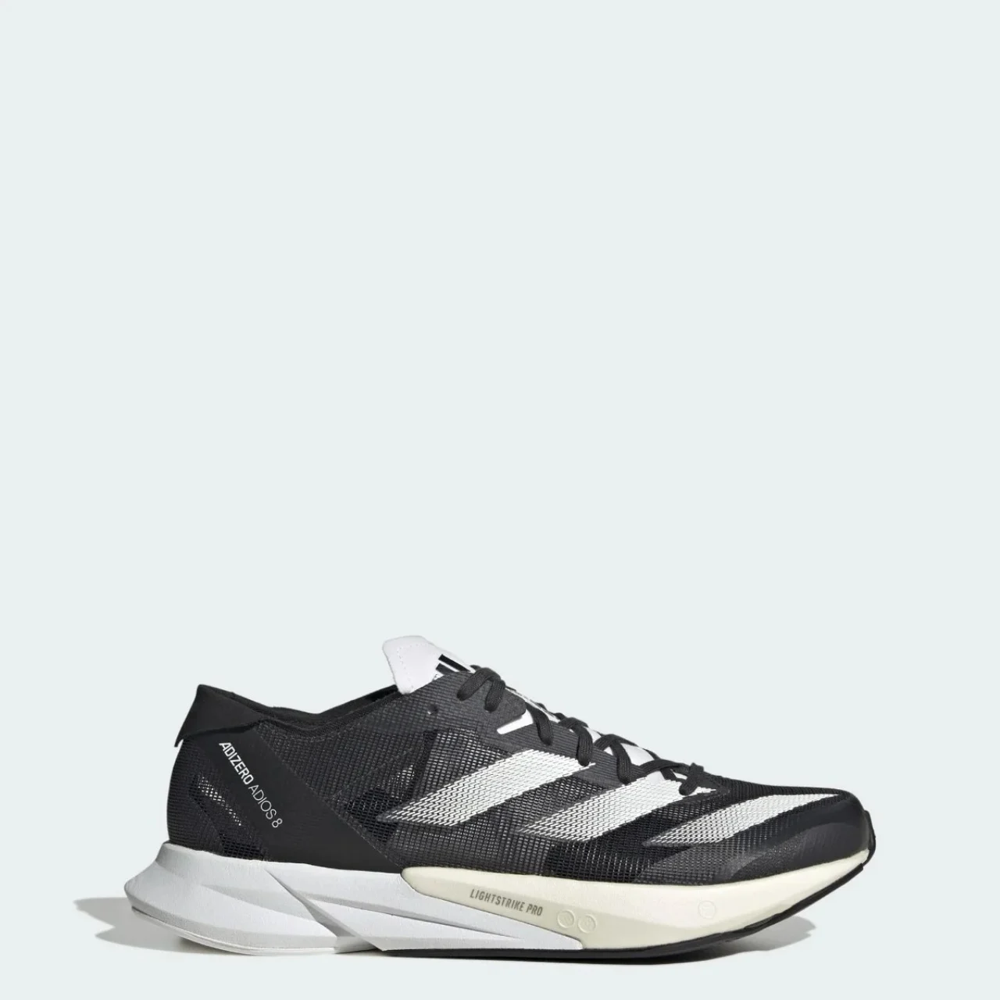
| Apakah kamu sedang mencari sepatu lari yang responsif? Adizero Adios 8 ini layak dipertimbangkan.
Meskipun tidak dilengkapi dengan carbon plate, sepatu ini dilengkapi dengan energi torsion rods yang memiliki tenaga dorong sama.
Di samping itu, sepatu ini dirancang sangat nyaman sehingga cocok untuk lari berbagai kecepatan dan jarak.
Adizero Adios 8 ini direkomendasikan untuk kamu yang mencari alternatif sepatu lari yang dilengkapi dengan fitur carbon plate karena performanya tidak jauh berbeda.
Kisaran harga: Rp2.000.000 |
- Kelebihan
- Cocok untuk latihan dan race day
- Banyak ruang di bagian depan
- Lebih murah dibandingkan super shoe yang umum
- Kekurangan
- Tidak untuk kamu yang suka lebih banyak bantalan
Adizero Prime X
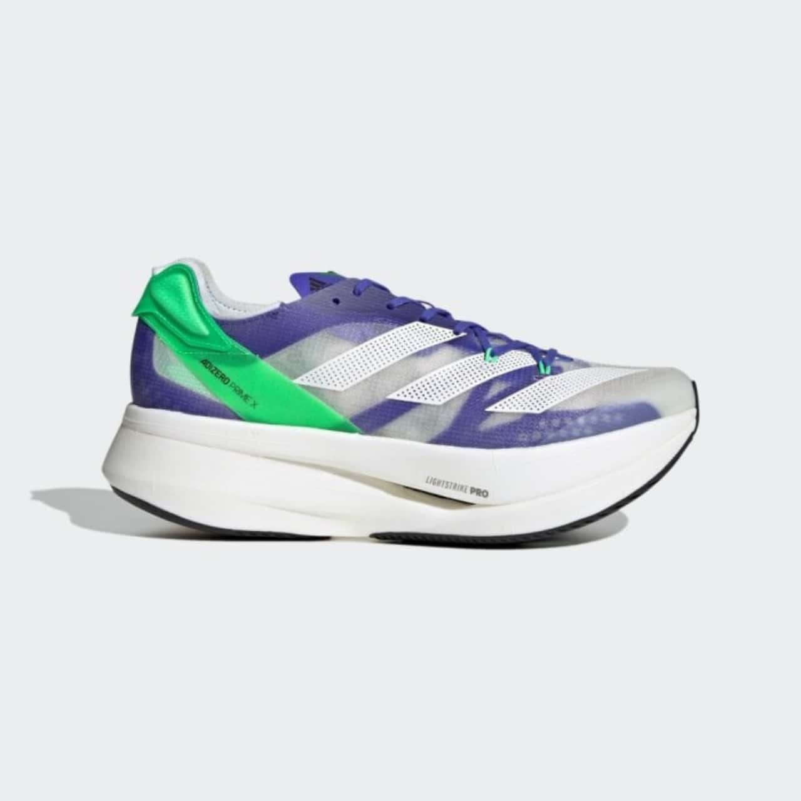
| Adizero Prime X ini merupakan super shoe yang terinspirasi dari Nike Aplhafly Next%.
Ada banyak sekali keunggulan yang ditawarkan oleh sepatu ini, salah satunya tingkat kenyamanan yang sangat optimal.
Namun, perlu diketahui, sepatu ini memiliki ketinggian stack lebih dari 50 mm yang membuatnya ilegal digunakan pada kompetisi World Athletics.
Adidas Adizero Prime X ini direkomendasikan untuk kamu yang sering mengikuti kompetisi lari.
Kisaran harga: Rp4.300.000 |
- Kelebihan
- Sangat nyaman
- Sangat responsif
- Sangat breathable
- Rocker yang agresif
- Kekurangan
- Bobotnya cukup berat
- Ketinggian sepatunya bisa terasa kurang nyaman di awal
- Ilegal digunakan pada kompetisi World Athletics
Gazelle
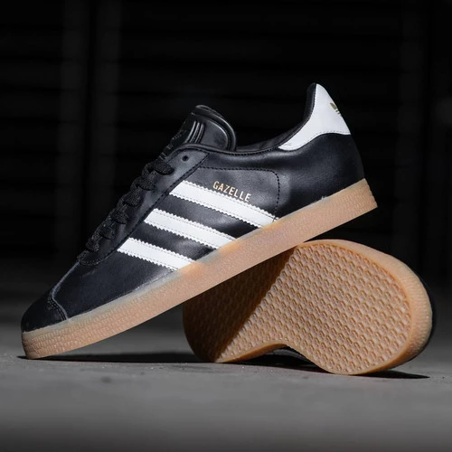
| Sepatu Adidas Gazelle pertama kali diperkenalkan pada tahun 1968. Mereka diciptakan sebagai sepatu olahraga multi-guna,
awalnya dirancang untuk menjadi sepatu latihan sepak bola.Desain awal Gazelle menampilkan bagian atas berbahan suede dengan tiga garis Adidas yang
mencolok di samping. |
Munchen City Series
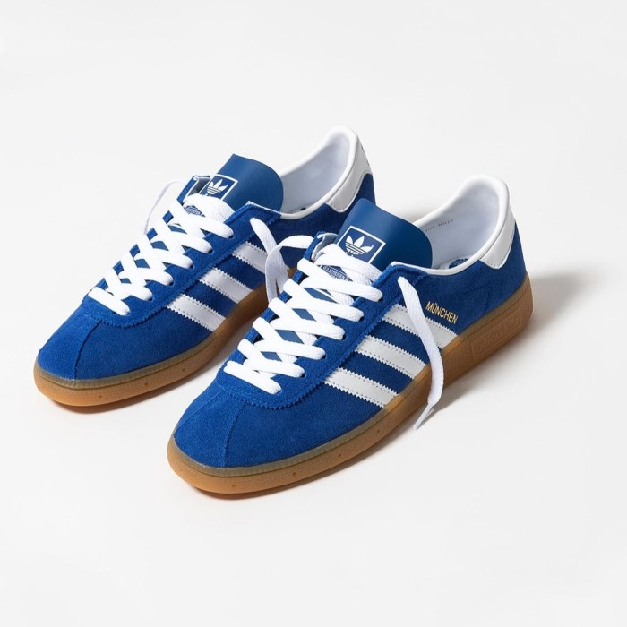
| Adidas München pertama kali diperkenalkan pada tahun 1976 dan menjadi salah satu ikon dalam sejarah sepatu Adidas.
Sepatu ini awalnya dirancang sebagai sepatu bola tangan (indoor handball), tetapi popularitasnya seiring waktu membuatnya berkembang
menjadi sepatu kasual yang dicintai banyak orang. Meskipun telah mengalami beberapa perubahan dalam desain dan materialnya
sepanjang waktu, Adidas München tetap menjadi bagian dari koleksi Adidas Originals dan terus dihargai karena gaya klasiknya. |
La Trainer
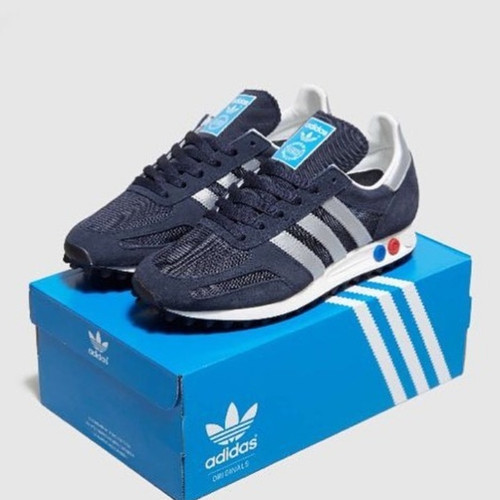
| Adidas LA Trainer pertama kali diperkenalkan pada tahun 1984. Sejak saat itu, sepatu ini telah menjadi salah satu ikon dalam dunia sepatu olahraga dan gaya hidup.
LA Trainer dirancang khusus untuk pelari dan memperkenalkan teknologi canggih pada masanya, termasuk elemen khusus pada bagian outsole yang dapat
disesuaikan untuk meningkatkan performa. Meskipun telah mengalami evolusi dan variasi sepanjang waktu, Adidas LA Trainer terus menjadi bagian dari koleksi Adidas
dan sering kali mendapatkan edisi khusus atau reissue untuk memperingati warisan sepatu tersebut. |
Stan smith
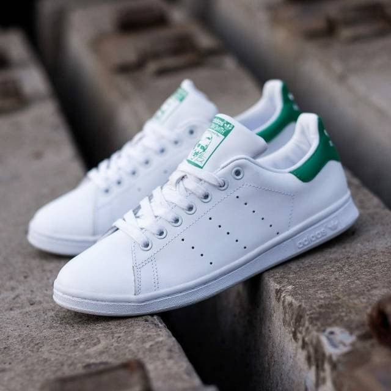
| Adidas Stan Smith pertama kali diperkenalkan pada tahun 1963 sebagai sepatu tenis dan pada awalnya dinamai "Adidas Robert Haillet" setelah pemain tenis Prancis Robert Haillet. Namun,
pada tahun 1971, setelah Haillet pensiun, sepatu tersebut diubah namanya menjadi "Adidas Stan Smith" untuk menghormati petenis Amerika Serikat, Stan Smith, yang menjadi juara
Grand Slam dan ambasador merek Adidas. Sejak saat itu, Adidas Stan Smith telah menjadi salah satu sepatu kasual yang paling ikonik dan terkenal di dunia fashion, dengan desain sederhana, siluet bersih, dan
logo Stan Smith yang terkenal di bagian belakang sepatu. Sepatu ini terus populer dan menjadi bagian dari warisan Adidas Originals. |
SuperStars
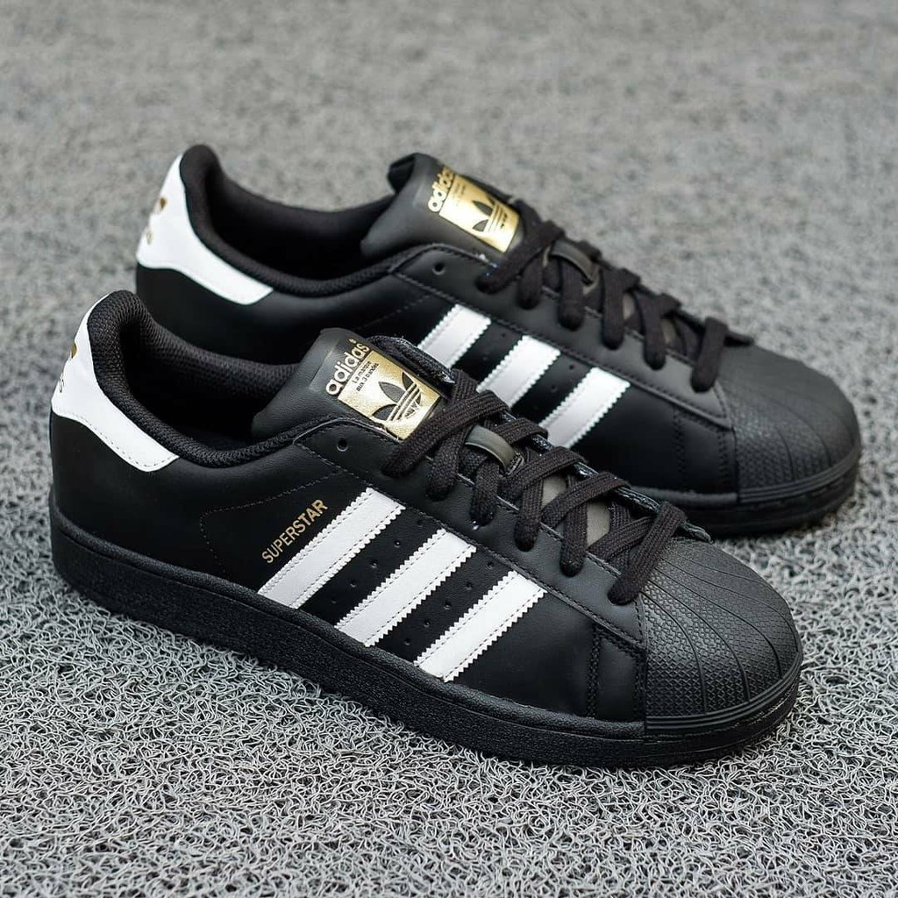
| Adidas Superstar pertama kali diperkenalkan pada tahun 1969. Sejak itu, sepatu ini telah menjadi salah satu ikon dalam dunia sneaker dan streetwear.
Desain shell-toe dan tiga garis khas Adidas membuatnya dikenal di seluruh dunia. Adidas Superstar awalnya dirancang sebagai sepatu basket, tetapi
dengan cepat meraih popularitas di kalangan pemain basket dan juga di luar lapangan basket.
Sepanjang waktu, Adidas Superstar telah mengalami beberapa kolaborasi dan pembaruan desain, tetapi siluet dasar dan elemen kunci dari sepatu ini tetap bertahan.
Adidas Superstar terus menjadi salah satu model sepatu yang sangat diakui dan dicintai, menjadi pilihan utama dalam gaya klasik dan retro. |
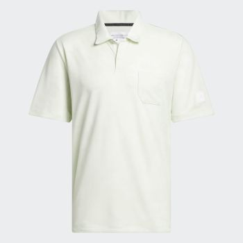
POLO SHIRT ADICROSS

VRCT LONG SLEEVE
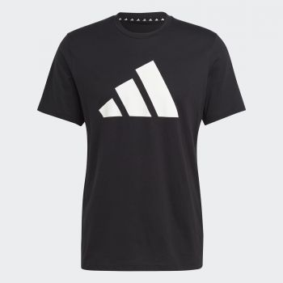
TRAIN ESSENTIALS
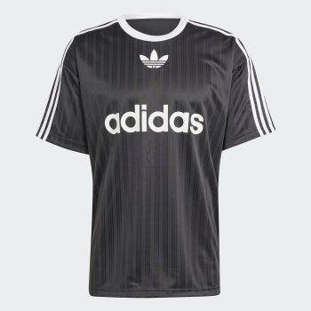
ADICOLOR T-SHIRT
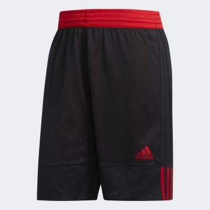
3G SPEED REVERSIBLE
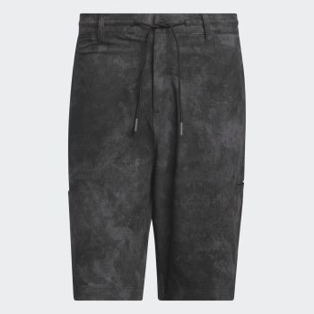
ADICROSS GOLF SHORTS
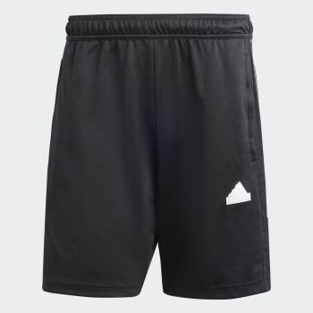
TIRO SHORTS
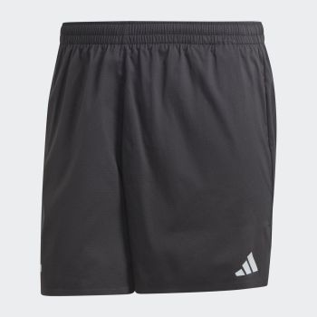
ULTIMATE SHORTS
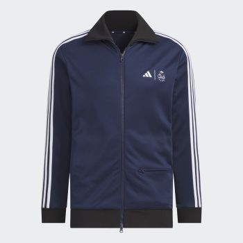
CLUBHAUS TRACK TOP
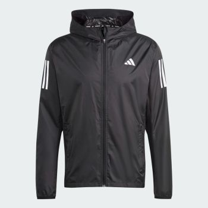
JACKET OWN THE RUN
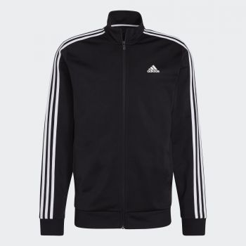
TRACK JACKET WARM UP
| NAMA : Ghifari Azhar Naufal |
| NIM : 10123262 |
| KELAS IF-7 | |
| | | | | | | |